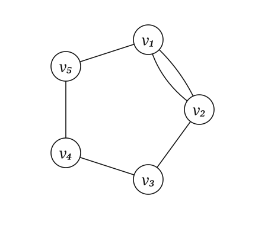
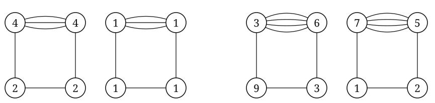
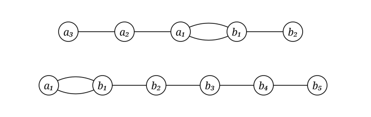
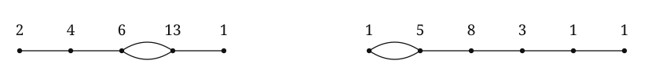
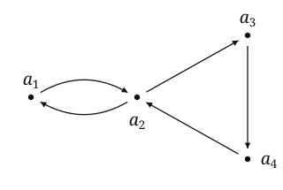
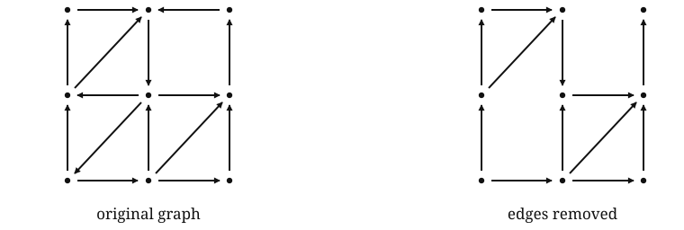
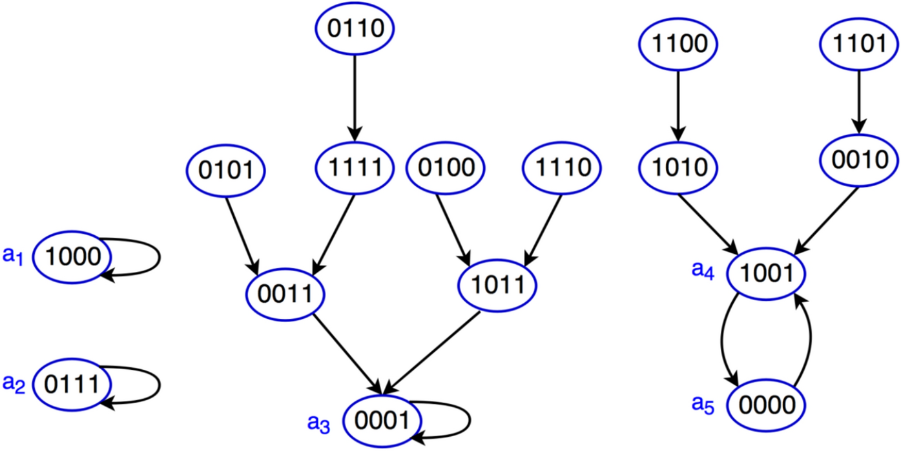

Sources
Figure Library
Figures and redraws from the underlying research sources. Each entry identifies the original figure and links directly to its paper, manuscript, or poster.
Cycles with parallel edges
Source: Busby, Dogbatse, and Palma, current manuscript. The notation \(\widetilde C_{n,k}\) means an \(n\)-vertex cycle in which one edge has been replaced by \(k\) parallel edges.


Paths with a doubled edge
Source: D. Glass and J. Wagner, “Arithmetical Structures on Paths With a Doubled Edge” (arXiv). Redrawn with small vertex markers under CC BY 4.0; the repository record gives the license statement.


Boolean monomial dynamics
Source: Busby, “On Acyclic Subgraphs and Transient Length Bounds,” 2024 poster. For a Boolean monomial system \(f\), \(D_f\) denotes its dependency digraph: vertex \(i\) points to vertex \(j\) when the output coordinate \(f_i\) depends on the input variable \(x_j\).


Top-down state-space layout
Source: M. R. Rafimanzelat, “Global Stabilization of Boolean Networks With Applications to Biomolecular Network Control”, DOI 10.1038/s41598-025-97684-y. Figure 1 is reproduced unchanged under CC BY-NC-ND 4.0. It is a general Boolean-network example, not a state-transition digraph from the current monomial-systems project.
